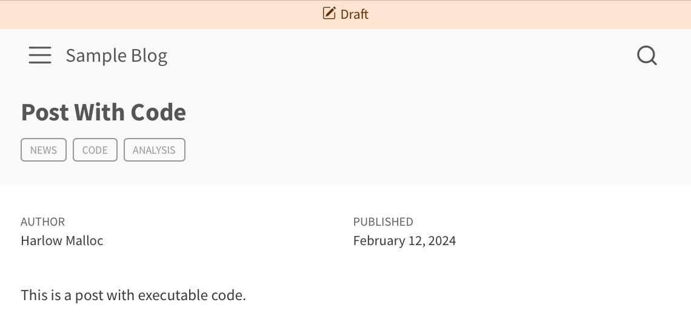

Website Draft Support
This feature improves Quarto’s support for draft documents in websites. It does this a few ways:
Improved linking behavior for draft documents
Previously, draft documents were excluded from search results, listings, and the sitemap. Now, draft documents will not appear in navigation as well (sidebar, navbars, and footers). Entries that link to a draft document will be removed / excluded. In addition, if a page on the website links to a draft document, the link will be omittted (leaving the contents of the link without the hyperlink itself).
These changes add up to mean that now when you mark a document as a draft, other pages will not link to it, so it will be as if it isn’t yet a part of the site.
Draft Modes
You can use the draft-mode option to control the behavior of draft documents in the rendered website. Use the following to control the behavior:
visible- the draft will visible and fully availableunlinked- the draft will be rendered, but will not appear in navigation, search, or listings.gone- the draft will have no content and will not be linked to (default).
When the gone mode is selected, each draft document will still produce a file when the site is rendered, but the document will be empty.
Previewing Drafts
When you use quarto preview to preview your local copy of a website, any documents that are marked as drafts will be included in the preview (they will appear throughout the site as they would if they are not previews). When you view a document marked as a draft, a band across the top of the document will notify you that the page is a draft.

Website Project Drafts
You can provide a list of prroject relative paths that will be considered a draft in your project configuration using the drafts option with an array of paths. Input listed in the option will be considered drafts and treated accodring to the draft mode that is selected.
Note that you can use metadata-files or profile to externalize the list of drafts (for example, if you wish to programmatically generate a list of draft documents).
Complete Example
_quarto.yml
project:
type: website
website:
title: "Cool Website."
navbar:
left:
- stuff/item1.qmd
- stuff/item2.qmd
- stuff/item3.qmd
- listing.qmd
- text: Another One
sidebar:
contents: stuff
page-footer:
center:
- stuff/item1.qmd
- stuff/item3.qmd
1 drafts:
- stuff/item3.qmd
2 draft-mode: visible
format:
html:
theme: cosmo
css: styles.css
toc: true- 1
-
The project is providing a simple list of draft documents. The same thing could be specified using
draft: trueinstuff/item3.qmd’s front matter. - 2
-
The draft mode is set to
visible, which will mean that drafts are linked to and visible when the site is rendered.
Complete Example with External Draft List
_quarto.yml
project:
type: website
website:
title: "Cool Website."
navbar:
left:
- stuff/item1.qmd
- stuff/item2.qmd
- stuff/item3.qmd
- listing.qmd
- text: Another One
sidebar:
contents: stuff
page-footer:
center:
- stuff/item1.qmd
- stuff/item3.qmd
format:
html:
theme: cosmo
css: styles.css
toc: true
1metadata-files:
- drafts.yml- 1
-
This project includes a metadata file which controls the
draftbehavior. This could be useful (for example) when apre-renderscript would like to generate a file which contains a list of draft documents in the project.
drafts.yml
website:
drafts:
- stuff/item3.qmd
draft-mode: gone